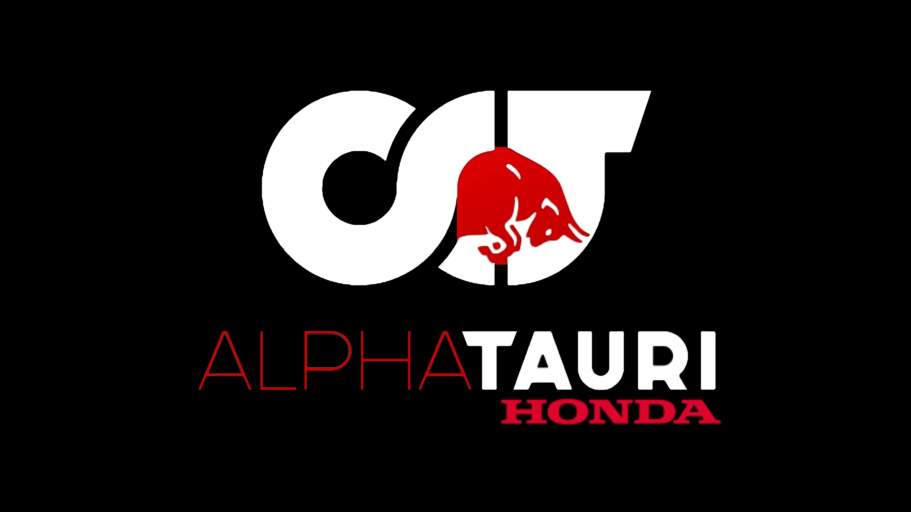
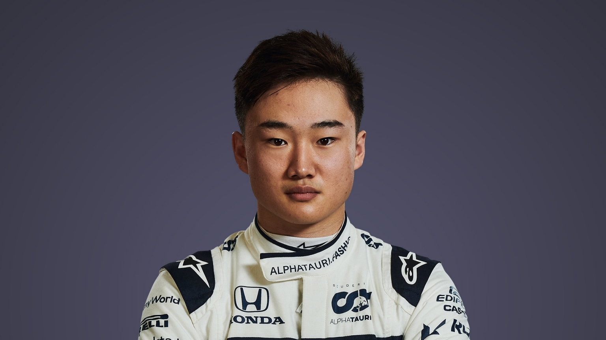
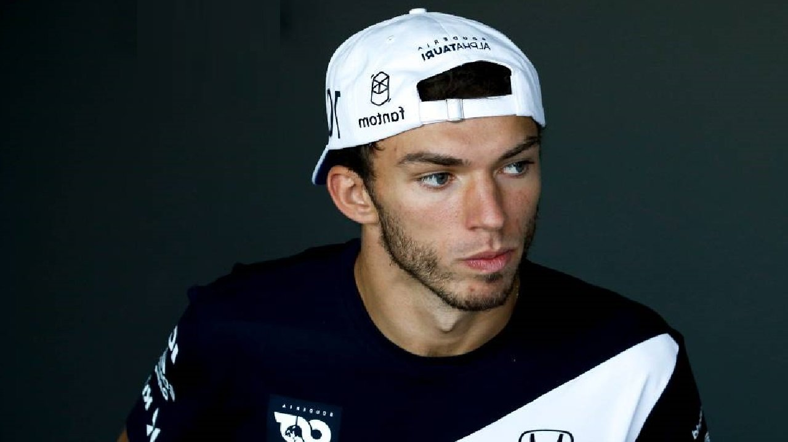

Alpha Tauri

Petite sœur de l’écurie Red Bull, Alpha Tauri a initialement été créée sous le nom de Toro Rosso, en 2006. L’objectif de cette équipe B, était avant tout de créer une écurie servant de passerelle permettant aux jeunes pilotes de la famille Red Bull de rejoindre l’équipe A. Réputée pour son intransigeance avec les pilotes, elle a permis à de grands champions comme Sebastian Vettel ou Max Verstappen d’éclore en Formule 1.
Les pilotes de la saison 2022 :
Yuki Tsunoda

Yuki Tsunoda réalise ses débuts en monoplace en 2016. Il intègre alors le championnat japonais de Formule 4, durant lesquelles il signe une deuxième puis une quatrième place. Recruté l'année suivante par Honda, Yuki Tsunoda rempile pour une deuxième saison de F4 japonaise et termine le championnat à la troisième place avant d'être finalement sacré champion en 2018.
Grâce à l'appui de Honda, Tsunoda accélère sa carrière en le faisant accéder à la F2 en 2020. La saison suivante, Yuki Tsunoda entre dans le grand bain en intégrant Alpha Tauri. Pour son premier Grand Prix dans la catégorie reine, il inscrit alors ses premiers points, en terminant neuvième.
Pierre Gasly

Pierre Gasly, membre de la filière des jeunes pilotes Red Bull, réalise ses débuts en Formule 1 au Grand Prix de Malaisie 2017. Il marque les esprits à Bahreïn, en terminant à une magnifique quatrième place. Alors que Daniel Ricciardo décide de quitter Red Bull, l’équipe autrichienne engage Pierre Gasly auprès de Max Verstappen pour la saison 2019. Chez Red Bull, Gasly souffre de la comparaison avec son coéquipier. Mais en 2019, lors du Grand Prix du Brésil, Gasly réussi à décrocher son premier podium en F1. Confirmé chez Alpha Tauri pour la saison 2020, Pierre Gasly ne cesse de progresser , : il devient alors le plus jeune français à remporter un Grand Prix à l’âge de 24 ans !